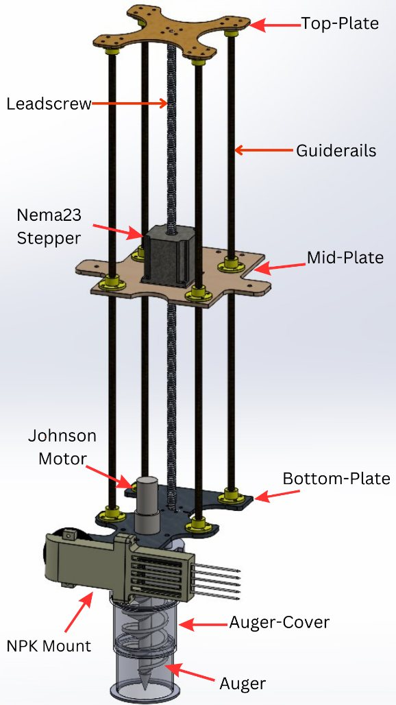
Drill below the surface
A NEMA 23 lead-screw stage lowers the auger along guide rails.
Team MARS’s third-generation Mars rover. My part was its soil subsystem, ABEx: a lab on the rover that drills below the surface, collects soil without contamination and tests it on board. I designed and fabricated it.

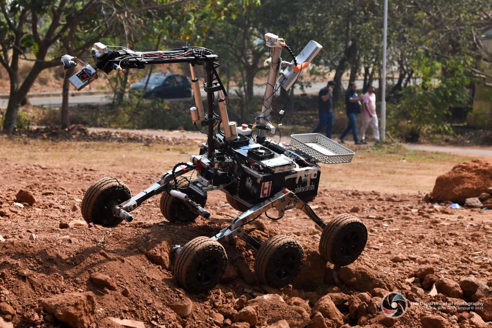
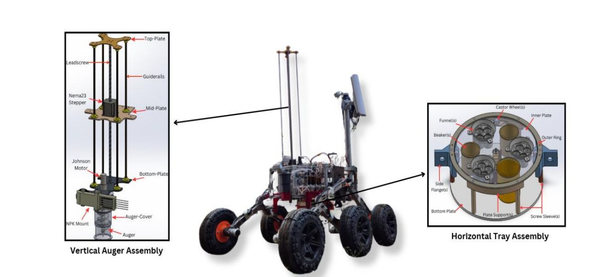
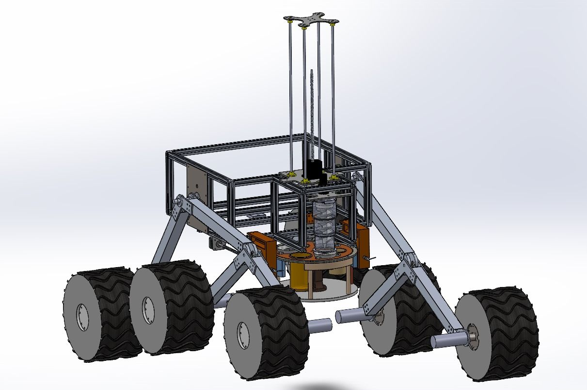
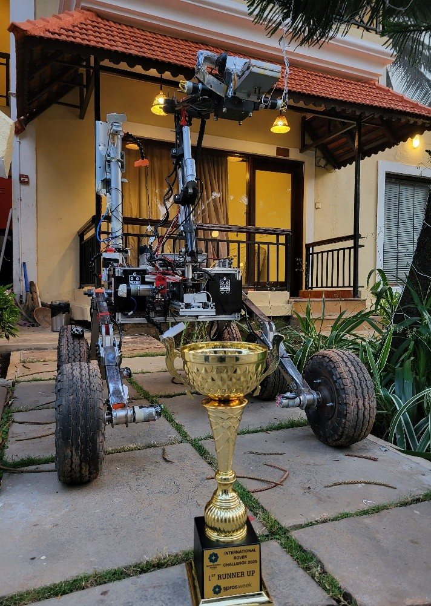

A NEMA 23 lead-screw stage lowers the auger along guide rails.
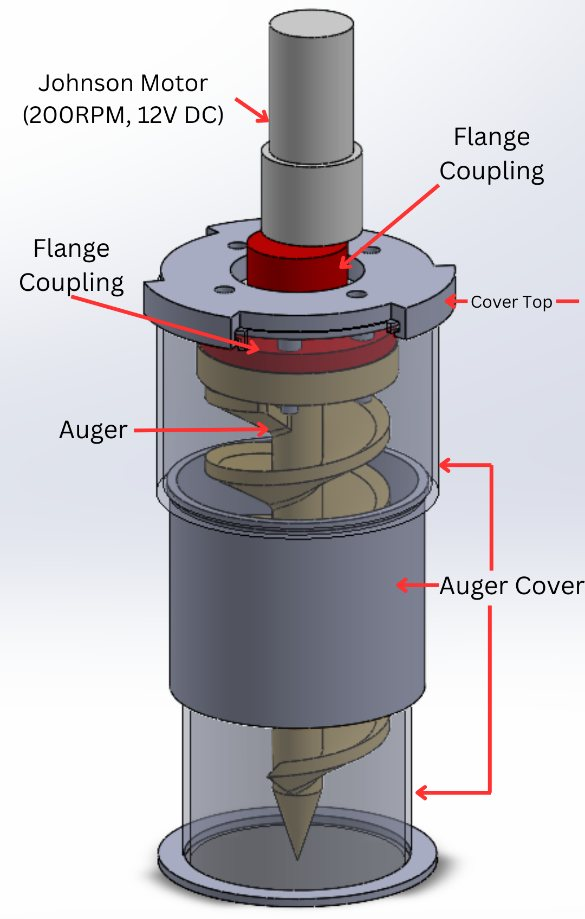
A covered auger brings soil up without contaminating it.
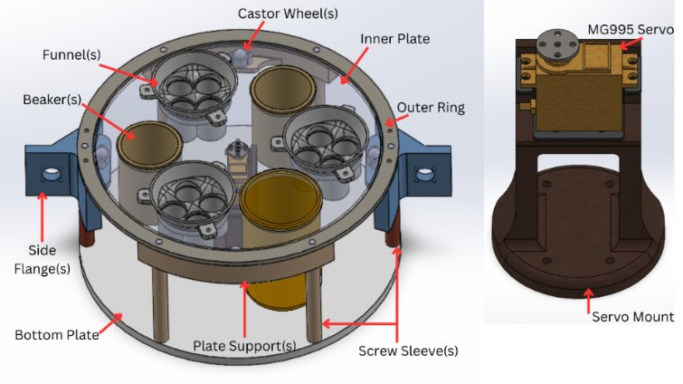
A rotating tray carries each sample to its test station.
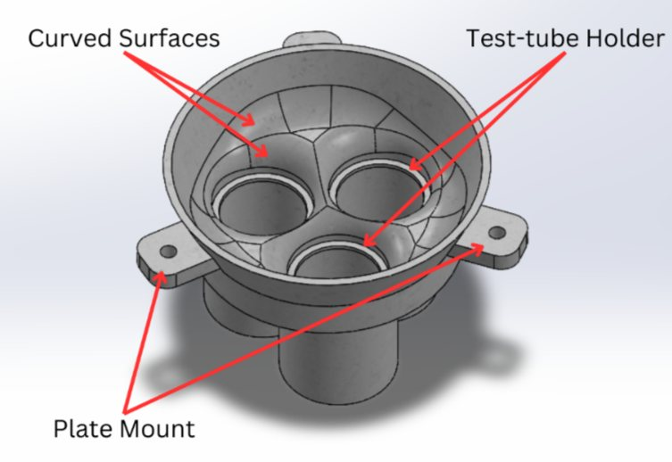
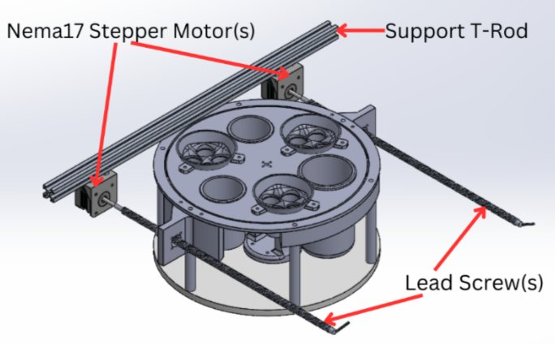
First in the ABEx category at IRC 2025, judged the best-designed soil-testing system. Alaknanda finished 2nd of 31 overall.
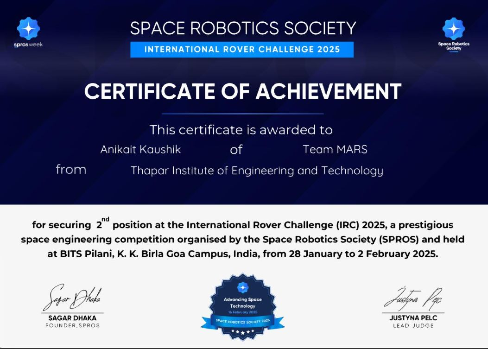
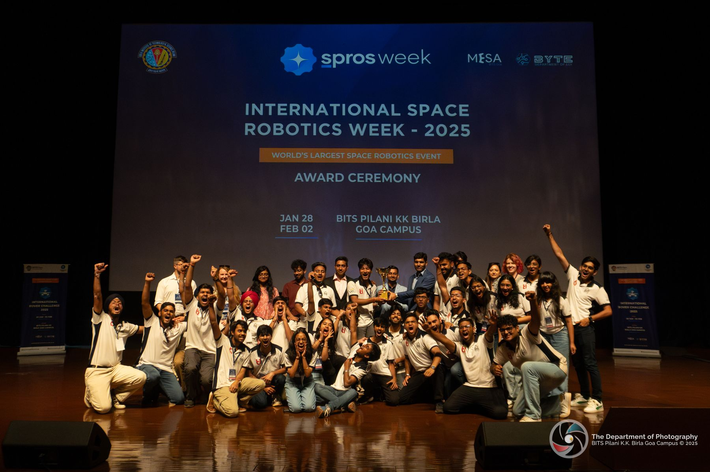
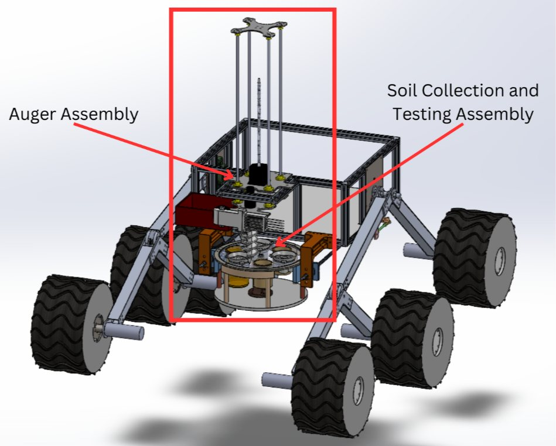
On Alaknanda my work was one subsystem: ABEx. I designed and fabricated it, from the auger stage to the test tray. It led to a published patent application with me as a named inventor: An Apparatus, System and Method for Robotic Soil Analysis and Collection (App. No. 202511062827).